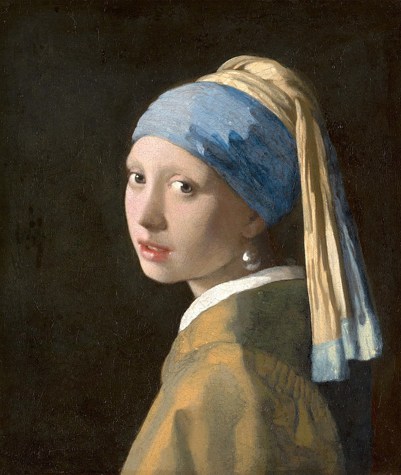

Famous Paintings
Mona Lisa

Mona Lisa (bahasa Italia: Monna Lisa [ˈmɔnna ˈliːza] atau La Gioconda [la dʒoˈkonda], bahasa Prancis: La Joconde [la ʒɔkɔ̃d]), Monalisa adalah lukisan minyak di atas kayu poplar yang dibuat oleh Leonardo da Vinci pada abad ke-16.
Lukisan ini sering dianggap sebagai salah satu lukisan paling terkenal di dunia dan hanya sedikit karya seni lain yang menjadi pusat perhatian, studi, mitologi, dan parodi.
Lukisan ini dimiliki oleh pemerintah Prancis dan dipamerkan di Musée du Louvre di Paris.[2]
Mona Lisa Wiki
The Starry Night

The Starry Night (Dutch: De sterrennacht) is an oil-on-canvas painting by the Dutch Post-Impressionist painter Vincent van Gogh. Painted in June 1889, it depicts the view from the east-facing window of his asylum room at Saint-Rémy-de-Provence,
just before sunrise, with the addition of an imaginary village.[1][2][3] It has been in the permanent collection of the Museum of Modern Art in New York City since 1941, acquired through the Lillie P. Bliss Bequest. Widely regarded as Van Gogh's magnum opus,[4][5]
The Starry Night is one of the most recognizable paintings in Western art.[6][7
The Starry Night Wiki
Girl with a Pearl Earing

Girl with a Pearl Earring (Dutch: Meisje met de parel)[1][2] is an oil painting by Dutch Golden Age painter Johannes Vermeer, dated c. 1665. Going by various names over the centuries,
it became known by its present title towards the end of the 20th century after the earring worn by the girl portrayed there.
[3] The work has been in the collection of the Mauritshuis in The Hague since 1902 and has been the subject of various literary and cinematic treatment
Girl with a Pearl Earing Wiki